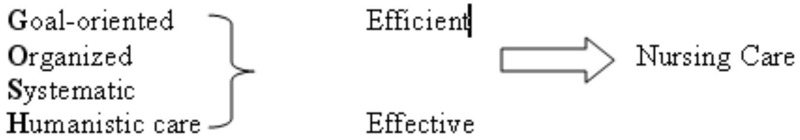

FUNDAMENTALS OF NURSING II-YEAR ONE SEMESTER TWO
BROAD OBJECTIVE
- The student to be able to provide holistic care to the unconscious and critically ill patients using the Nursing Process
SPECIFIC OBJECTIVES
- Apply the Nursing process in the provision of care
- Perform health assessment on a patient
- Provide holistic care to the unconscious and the critically ill patients
- Provide follow up care to medical /surgical patients following discharge.
NURSING DEFINITION
Florence Ninghtingale (1820-1910) defined Nursing as:
"Nursing is putting us in the best possible condition for nature to restore and preserve health"
Virginia Henderson (1966) defined Nursing as:
"The unique function of the nurse is to assist the individual, sick or well in the performance of those activities contributing to health or its recovery or to a peaceful death, that he could perform unaided if he had the necessary strength, will or knowledge, and to do this in such a way as to help him gain independence as rapidly as possible"
American nurses association (ANA) (1995) defined nursing as:
"Nursing is the diagnosis and treatment of human responses to actual and potential health/ problems"
Definition of Nursing Process
- Nursing process is a systematic and dynamic method of problem solving approach OR
- Method of making clinical decisions, Urden (2002).
- It is a cyclical and on-going process that can end at any stage if the problem is solved.
- Nursing process is a process by which nurses deliver care to patients, supported by nursing models or philosophies.
- The nursing process was originally an adapted form of problem-solving and is classified as a deductive theory.
Historical Background
- In its early developmental years, nursing did not seek or have the means to control its own practice.
- Before the nursing process was developed, nurses tended to provide care that was based on medical orders written by physicians focused on specific disease conditions rather than on the person being cared for.
- In more recent times, the nursing profession has struggled to define what makes nursing unique and has identified a body of professional knowledge unique to nursing practice.
- In 1955, Hall originated the term nursing process. Since then various nurses have described the process in different ways
- In 1980, the American Nurses Association (ANA) developed the first Social Policy Statement defining nursing as "the diagnosis and treatment of human responses to actual or potential health problems."
- Along with the definition of nursing came the need to explain the method used to provide nursing care.
Thus, years ago, nursing leaders developed a problem-solving process consisting of three steps-assessment, planning, and evaluation-patterned after the scientific method of observing, measuring, gathering data, and analyzing findings.
This method, introduced in the 1950s, was called nursing process.
Later Development
- Knowles (1967) suggested 5 "D's":
- Discover
- Delve
- Decide
- Do
- Discriminate
WICHE Steps (1967)
In 1967, Western Interstate Commission on Higher Education (WICHE) identified 5 steps:
- Perception
- Communication
- Interpretation
- Intervention
- Evaluation
Catholic University Components (1967)
Also in 1967, the nursing faculty of the Catholic University of America proposed 4 components of the process:
- Assessment
- Planning
- Intervention
- Evaluation
ANA Standards (1973)
In 1973, the American Nurses' Association (ANA) published standards of nursing practice which described the current 5 steps of the nursing process:
- Assessing
- Diagnosing
- Planning
- Intervention
- Evaluation
Shore (1988) described the nursing process as "combining the most desirable elements of the art of nursing with the most relevant elements of systems theory, using the scientific method."
This process incorporates an interactive/ interpersonal approach with a problem-solving and decision-making process (Peplau, 1952; King, 1971; Yura & Walsh, 1988).
Over time, the nursing process expanded to five steps and has gained widespread acceptance as the basis for providing effective nursing care.
Nursing process is now included in the conceptual framework of all nursing curricula, is accepted in the legal definition of nursing in the Nurse Practice Acts of most countries and is included in the standards of practice by the international council of nurses (ICN)
Benefits of Nursing Process
- Continuity of Care
- Provides an orderly & systematic method for planning & providing care
- Standards of Care
- Enhances nursing efficiency by standardizing nursing practice
- Meets standards of professional nursing practice and accreditation of hospitals
- Facilitates documentation of care
- Collaboration of Care
- Provides a unity of language for the nursing profession
- Is economical
- Prevention duplication of care
- Stresses the independent function of nurses
- Increases care quality through the use of deliberate actions
- Consistency and systematic nursing education
- Job satisfaction
- Professional growth
- Legal protection
Purpose of Nursing Process
- To identify a client's health status; his Actual/Present and potential/possible health problems or needs.
- To establish a plan of care to meet identified needs.
- To provide nursing interventions to meet those needs.
- It helps nurses in arriving at decisions and in predicting and evaluating consequences.
- It was developed as a specific method for applying a scientific approach or a problem solving approach to nursing practice.
- To provide an individualized, holistic, effective and efficient nursing care.
Additional Purposes
- Nursing process is Central to nursing actions.
- It is an efficient method of organizing thought processes for clinical decision making and problem solving.
- Provides Framework within which the individualized needs of the client, family and community can be met.
- Ensures that care is planned, individualized and reviewed over period of time that patient and the nurse have a professional relationship.
Qualities/Skills for application of the Nursing Process
- Intellectual skills
- Critical thinking
- Decision-making
- Interpersonal skills
- Technical skills
- Creativity
- Adaptability
Cognitive or Intellectual skills
Cognitive or Intellectual skills, such as analyzing the problem, problem solving, critical thinking and making judgements regarding the patient's needs. Included in these skills are the ability to identify, differentiate actual and potential health problems through observation and decision making by synthesizing nursing knowledge previously acquired.
Critical Thinking
- MENTAL OPERATIONS -decision making & reasoning
- KNOWLEDGE-having the facts & understanding the reason behind the knowledge
- SKILLS; manual, intellectual, interpersonal
- ATTITUDES- curious/open-minded/nonjudgmental....caring; willingness and ability to care
Interpersonal Skills
Include therapeutic communication, active listening, conveying knowledge and information, developing trust or rapport building with the patient and ethically obtaining needed and relevant information from the patient which is then to be utilized in health problem formulation and analysis.
Technical skills
includes knowledge and skills needed to properly and safely manipulate and handle appropriate equipment needed by the patient in performing medical or diagnostic procedures such as vital signs and medication/drug administration etc.
Characteristics of the Nursing Process
- Planned - organized and systematic
- Client-centered
- Goal-directed/oriented
- Prioritized
- Cyclical and Dynamic
- Interpersonal and collaborative
- Within the legal scope of nursing
- Based on knowledge-requiring critical thinking and decision making skills
- Universally applicable
- Can focus on problems or strengths
- Open to new information
- Permits creativity
- Humanistic
- Efficient and effective
NURSING PROCESS
